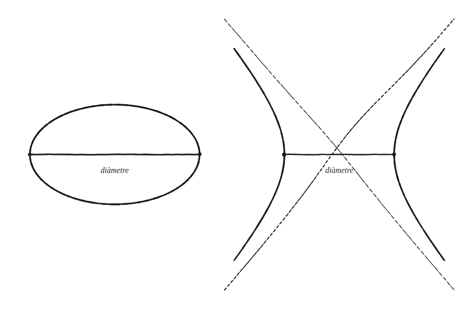
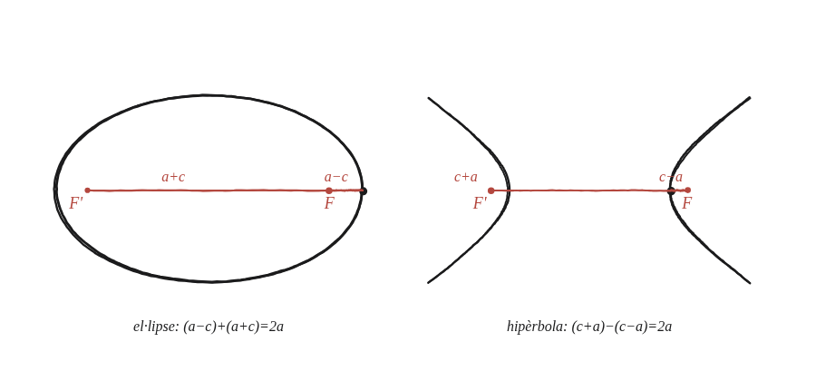

Demostra que la constant focal d'una el·lipse o d'una hipèrbola és igual al seu diàmetre.

Dues coses que no semblen la mateixa
La "constant focal" ve de sumar (el·lipse) o restar (hipèrbola) distàncies a dos punts fixos, els focus. El "diàmetre" és, simplement, la distància entre els dos vèrtexs de la figura —una mida, no cap suma ni resta relacionada amb els focus. Res, a la seva definició, garanteix que siguin la mateixa xifra.
Calcular-ho al punt més fàcil
El vèrtex mateix és el punt de la corba més senzill per calcular-hi la constant focal directament: ja és sobre l'eix on cauen els dos focus, així que les distàncies del vèrtex a cadascun es poden escriure sense cap arrel quadrada, només sumant o restant longituds sobre una mateixa línia.

El cas de l'el·lipse
El vèrtex dret és a distància a−c del focus proper i a+c del llunyà (el focus proper és entre el centre i el vèrtex; el llunyà és a l'altra banda). La constant focal —la suma— és (a−c)+(a+c) = 2a.
El cas de la hipèrbola
Aquí el focus és més enllà del vèrtex, no abans: el vèrtex dret és a distància c−a del focus proper i c+a del llunyà. La constant focal —ara la diferència— és (c+a)−(c−a) = 2a també.
El mateix resultat, dues vegades
En tots dos casos, la constant focal surt exactament 2a —i 2a és, precisament, la distància entre els dos vèrtexs (a un costat del centre i a l'altre): el diàmetre de la figura. Aquesta demostració no depèn de cap punt genèric de la corba, només del vèrtex, i per tant val igual per a qualsevol el·lipse o hipèrbola, sigui quina sigui la seva mida concreta.
La constant focal (2a en tots dos casos) és exactament el diàmetre de la figura —la distància entre els seus dos vèrtexs. Es demostra calculant les dues distàncies del vèrtex als focus en termes de a i c (a∓c i a±c), i comprovant que la seva suma (el·lipse) o diferència (hipèrbola) dona sempre 2a. És la mateixa constant que fa funcionar el mètode del fil de la Qüestió 98, ara demostrada des d'un punt fix en comptes d'un punt qualsevol de la corba.
Comprovació
El·lipse a=5,c=4: al vèrtex (5,0), distàncies 5−4=1 i 5+4=9, suma 10=2·5. Hipèrbola a=4,c=5: al vèrtex (4,0), distàncies 5−4=1 i 5+4=9, diferència 8=2·4.